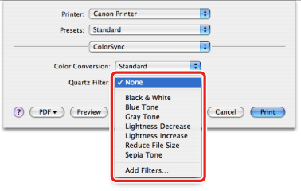

Specifying a Color Filter (Mac OS X 10.4.x)
You can apply a color filter to the print output.
1.
From the [File] menu of the application software, select [Print].
The [Print] dialog box is displayed.
2.
The [ColorSync] preferences pane is displayed.
3.
Specify the color filter you want to output with from [Quartz Filter].
